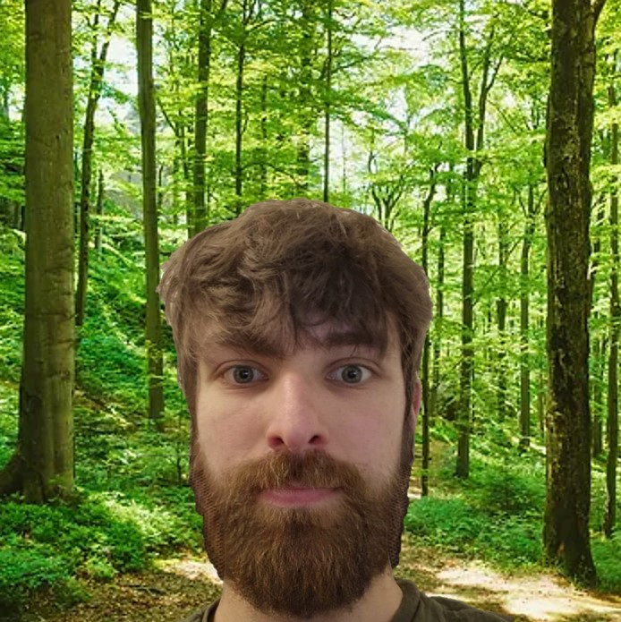

Redaktion

Norbert Larson Redaktionsleiter für Umwelt und Natur
Ich habe an keiner Uni Studiert bin aber ein Experte und sehe mich als Wissenschaftler. Ich lebe seit 7 Jahren im Wald und kenne mich daher sehr gut mit der Natur aus. Für diese Zeitung arbeite ich seitdem ich all meine Zähne verloren habe, als ich zu stark an einbem Baum kaute. Meine Hobbies sind Bäume anschauen und Wanderer erschrecken.
Gerhard Trobenboehmer Redaktionsleiter für Architektur und Philosophie
Ich habe im wunderschönen Ludwigshafen Architektur studiert, nach dem zwei meiner Gebäude zusammenbrachen und meine einzige Brücke sich verbog, realisierte ich, dass ich nicht wirlich gut in meiner Profission war und entschloss mich daher meine Leidenschaft zu meinem Beruf zumachen: Leute schlecht zureden ohne es besser zukönnen.
Heinz Stein Chefreporter für Digitalisierung IT und Sicherheit
Hallo, bin ich Online? Ja, ok. Mein Name ist Heinz ich habe 1982 mein Informatik Studium abgebrochen, und habe danach bis 2020 als IT Berater für die Bundesregierung gearbeitet. Ich bin wirklich gut mit moderner Technik, ich habe sogar mal ein Fax-Gerät benutzt.